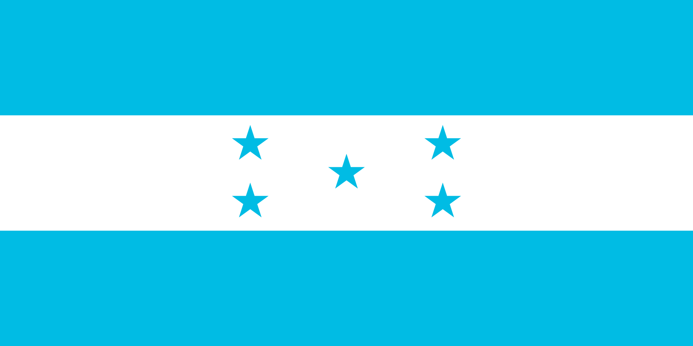

WDD 131 - Dynamic Web Fundamentals - Kenneth Duron
About Me
My name is Kenneth. I was born in Honduras and my family is from Honduras as well. I am currently studying Web Frontend Development at Cumorah Academy. I enjoy spending time with my family, traveling, and learning new technologies.

Cortes, Honduras

Honduras is the second largest country in Central America, after Nicaragua. It has diverse regions including highlands, coastal plains, and Caribbean lowlands.